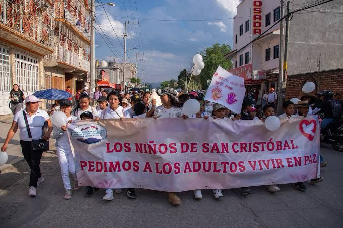

Conciencia y acción frente a las desapariciones de menores en Chiapas
Según los datos de 2023, desaparecen más de 10 niños y/o adolescentes cada semana. Esto se traduce en más de 2,000 menores que han sido reportados como desaparecidos desde el 2020. Tenemos una crisis alarmante entre las niñas y adolescentes, quienes constituyen más del 70% de estos casos.

-
La situación de desaparición de menores es muy grave en todo el país, particularmente, en Chiapas la situación es muy grave. Durante el 2022 tuvo el cuarto puesto dentro de los estados del país con más desapariciones de menores, siendo las más afectadas las niñas y adolescentes.
Los datos nos muestran que a lo largo de los años el problema no ha mejorado; sigue afectando profundamente a nuestras comunidades. Con nuestro proyecto en este hackatón, buscamos promover una respuesta inmediata para salvaguardar a los grupos más vulnerables. Recordemos que no son sólo cifras, sino vidas humanas que merecen protección y justicia. 
-
-
Hoy, con la desaparición de niños, niñas y adolescentes, nos enfrentamos a un desafío muy grande en el país. En especial, este problema toca el corazón de Chiapas, que es el cuarto estado con mayor cantidad de denuncias de menores desaparecidos, y nos llama a todos a la acción.
Gracias al trabajo de Melel Xojobal y Redias, hoy contamos con un registro que nos muestra que más de 2,000 menores han sido reportados como desaparecidos entre el 2020 y el 2023 solamente en el estado de Chiapas, con una prevalencia alarmante entre las niñas y adolescentes, quienes constituyen más del 70% de estos casos. Descubre cómo puedes ayudar
Con este proyecto buscamos generar conciencia e invitar a la acción para cambiar el futuro de nuestro país. Está en nuestras manos generar el cambio.
-

-
A continuación, se muestra una tabla en la cual se ven las apariciones de menores reportados desparecidos de acuerdo al rango de tiempo en el cual se hallaron después de la denuncia. El objetivo de esta gráfica es mostrar que la mayoría de las apariciones, en todos los municipios, ocurrieron en la primera semana del reporte de la desaparición. Tabla
-
En Jiquipilas, un niño de 12 años llamado Joaquín Alejandro desapareció mientras recolectaba plástico con su madre cerca de un basurero municipal. Tras perderlo de vista, la madre inició una búsqueda intensa, pidiendo ayuda a vecinos y autoridades. Finalmente, tras una búsqueda coordinada en la que participaron vehículos anunciadores y elementos de seguridad, el niño fue encontrado sano y salvo y regresó a su hogar, donde fue recibido con lágrimas de felicidad por su familia.

-
Esta crisis no es solo un reflejo de la violación de nuestros derechos más básicos, como la integridad y la libertad, sino también una violación de nuestro derecho a vivir en un entorno seguro y protegido. Al denunciar, no solo protegemos al individuo desaparecido, sino que fortalecemos a toda nuestra comunidad contra la impunidad…. Estamos frente a un desafío que no podemos ignorar. Es esencial entender que, detrás de cada número, hay una historia no contada, un futuro incierto, y un llamado a la acción.
Juntos, podemos trabajar hacia un futuro donde ningún niño o adolescente en Chiapas deba enfrentarse al temor de desaparecer sin dejar rastro. Este es el momento de actuar, de ser parte de la solución. ¿Nos acompañas en este compromiso por nuestros niños y niñas?
-
Cuanto más rápido intervengamos, más información podemos recoger.
La persona desaparecida puede alejarse más de la zona en la que se vio por última vez.
Es más fácil encontrar testigos valiosos y pistas para la investigación.
Tenemos recuerdos más frescos. Nos es más fácil reconstruir lo que ha ocurrido con anterioridad. Hay muchos datos que se tienen con certeza en las primeras horas y que, después, se pueden perder.
-
El 74% de las personas desaparecidas son mujeres, mientras que el 26% son hombres; lo que pone de relieve una importante disparidad de género en las desapariciones.
-
Etnia: 1,288 personas se identifican como mestizas y 693 como indígenas. Esto sugiere que los dos principales grupos étnicos se ven significativamente afectados.
Estatus migrante: La mayoría de los casos no especifican el estatus migratorio, pero hay algunos casos que involucran a inmigrantes de Honduras (18), Guatemala (7), Haití (2), El Salvador, Ecuador y Venezuela.
-
Día de la semana: Las desapariciones son ligeramente más frecuentes los viernes, seguidos de cerca por los lunes y sábados.
Hora del día: Muchas desapariciones no están especificadas por hora, pero sí el horario de la mañana como las 10:00 a.m. y las 7:00 a.m. y el de la tarde alrededor de las 4:00 p.m. son tiempos anotados.
-
De los casos del conjunto de datos, 1.365 han sido resueltos con la persona encontrada con vida, 610 aún no han sido localizados y 6 fueron encontrados fallecidos. Esto pone de relieve la gravedad de la situación y la importancia de intervenciones oportunas.
-
Distribución regional: La región 'Metropolitana' (presumiblemente incluyendo a Tuxtla Gutiérrez) tiene el mayor número de desapariciones, seguida por 'Soconusco' y 'Altos'. Esto podría indicar que las áreas urbanas o fronterizas son zonas de mayor riesgo.